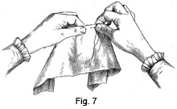
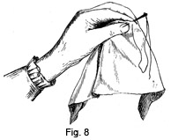
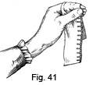
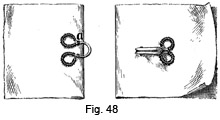
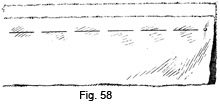
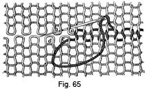

1893—School Needlework
by Olive C. Hapgood
Part II—Plain Sewing
PLAIN SEWING
Sewing is work done with the needle and thread. The following directions should be before the pupil during class work. (The illustrations generally represent the stitches enlarged.)
The above represents a three inch rule, to use when certain measurements are required. The first inch is divided into halves and quarters, the second inch into eighths, and the third inch into sixteenths.
- How many inches in a yard?
- Three quarters of a yard?
- One half?
- A quarter?
- An eighth?
- A sixteenth?
DRILLS
Drill No. 1— For practice in using the needle and thimble.
Materials—A needle and a thimble.
Directions—
1. Place the thimble on the second finger of the right hand.
2. Hold the pointed end of the needle between the end of the thumb and forefinger of the right hand.
3. Place the thimble on the eye of the needle.
4. Push the needle between the thumb and forefinger, being careful not to cramp the other fingers.
5. With the left hand push the point back into its former position.
6. Repeat until it can be done easily.
Drill No. 2 — For practice in the motion of stitching, hemming, etc.
Materials—No. 8 needle, No. 50 thread, and a strip of white cotton cloth.
Directions—
1. Thread the needle, but make no knot.
 2. Hold the cloth over the forefinger of the left hand, keeping it in
place with the thumb and second finger, as in Fig. 6.
2. Hold the cloth over the forefinger of the left hand, keeping it in
place with the thumb and second finger, as in Fig. 6.
3. Hold the needle between the thumb and the forefinger of the right hand.
4. Insert the needle from right to left, taking up a little of the cloth, and push the needle nearly through.
5. Take the pointed end of the needle between the thumb and cushion of the forefinger of the right hand.
6. Draw the needle and thread through, bringing the thimble finger down near the forefinger, with the thread passing between the third and little fingers. Keep the little finger nearly straight to guide the thread.
7. Repeat until the motion is learned.
Drill No. 3—For practice in the motion of basting, running, gathering, etc.
Materials— No. 8 needle, No. 50 thread, and a strip of cotton cloth.
Directions—
1. Have the needle threaded, but make no knot.
2. Hold the cloth between the thumb and forefinger of each hand, as in Fig. 7.
3. With the right elbow away from the side, put the point of the needle through a few threads of the cloth, placing the thumb and forefinger of the right hand over it.
4. Pressing the end of the thimble against the eye of the needle, take three or more stitches in the cloth over the cushion of the left forefinger, moving only the elbow joint. (Fig. 7.)
5. Draw the needle and thread through as in Drill No. 2.
6. Repeat until the motion is learned.
Drill No. 4— For practice in the motion of overcasting. Materials. — No. 8 needle, No. 50 thread, and a folded edge of cotton cloth.
Directions—
1. Have the needle threaded, but make no knot.
2. Hold the fold of the cloth slanting across the edge of the cushion of the left forefinger, keeping it in place with the thumb and second finger, as in Fig. 8. (Figure 8. showing the work and hand in position.)
3. Put the needle in from the back of the fold, pointing it towards the left shoulder.
4. Draw the needle and thread through as in Drill No. 2.
Drill No. 5— For practice in the motion of over-handing.
Materials— No. 8 needle, No. 50 thread, and a folded edge of cotton cloth.
Directions—
1. Have the needle threaded, but make no knot.
2. Hold the fold of cloth horizontally along the edge of the cushion of the left forefinger, and around the end of the finger, keeping it in place with the thumb and second finger, as in Fig. 9. (Fig. 9—Showing the work and hand in position.)
3. Hold the right elbow away from the side, without bending the wrist, and so that the palm of the hand is towards you.
4. Insert the needle from the back of the fold, pointing it directly towards the chest.
5. Draw the needle and thread through as in Drill No. 2.
CANVAS-WORK
The stitches in sewing can be easily learnt on canvas, using bright-colored single or split zephyr, according to the quality of the canvas.
Fig. 10 represents a corner of a square of canvas, with the stitches taken in the following order:—
- Uneven basting.
- Running.
- Stitching.
- Overcasting.
- Overhanding.
- Catch-stitch
- Button-hole stitch.
- Darning.
- The edges are worked with the blanket or loop-stitch.
CREASING AND PINCHING
A crease for sewing is made by folding the cloth, and pressing the edge until a line is made, which serves to sew on.
Materials—A ten-inch strip of bleached or half-bleached cotton cloth. (A more distinct line can be made on the bleached than on the half-bleached cotton cloth.)
Creasing—
1. Hold the cloth firmly with the hands as in Fig. 11.
2. Beginning at the upper right-hand end of the cloth, turn down towards you the edge one-fourth of an inch in depth, for three or four inches.
3. Holding the cloth tightly between the hands, crease the edge with the end of the thumb-nail and the cushion of the left forefinger, until it will remain flat and has a sharp edge.
4. Fold and crease the next three inches in the same manner, and so continue to the end.
5. Holding the right-hand corner of the fold firmly, crease the entire length.
Pinching—
1. At the right end of the crease, lay a half-inch fold between the thumb and forefinger of the right hand.
2. Lay another over this, and so on, until all the cloth is folded.
3. Pinch the folds, and turn up the edge.
4. Turn the other side of the cloth towards you, and the sharp edge will serve as a line to sew on.
If the cloth has been well creased, pinching is seldom necessary.
- What is a crease?
- What purpose does it serve in sewing?
- How should you hold the cloth in creasing?
- At which end should you begin?
- How is the edge turned?
- How is it creased?
- How should the edge of the fold look?
- After the cloth has been once creased, what should be done to the entire length?
- After turning up the edge, what should be done? Why?
BASTING
Basting is done by taking long stitches to keep the cloth in place for sewing.
Materials—No. 8 needle, No. 50 colored thread, pins, and a half-yard strip of cotton cloth, with one of the long sides creased.
In even basting, make the stitches short and alike on both sides. This method of basting is used for the seams of a dress-waist, or for several thicknesses of cloth. (Fig. 12.—Showing even basting stitches, needle inserted)
 In uneven basting, take stitches half-an-inch long on the upper side, and
as small as possible on the under side. This is the proper basting for ordinary
work, as the stitches serve for a guide in sewing.
In uneven basting, take stitches half-an-inch long on the upper side, and
as small as possible on the under side. This is the proper basting for ordinary
work, as the stitches serve for a guide in sewing.
The basting, in Fig. 14, is done by taking one long and two short stitches alternately.
Basting—Practice Drill No. 3 (page 15).
1. Make a knot in the thread to hold it securely.
2. Begin at the right-hand side of the cloth.
3. Place the right-hand corners exactly together, having the sharp edge of the crease towards you.
4. Insert the needle on the crease one-eighth of an inch from the end of the cloth, and take up a few threads (Fig. 15). (Fig. 15—Showing the needle in position for beginning.)
5. Let the needle remain in the cloth, and pin the opposite ends together, by placing a pin vertically through the cloth.
6. Put a pin in the middle vertically.
7. Draw the needle through, and proceed with the basting required, holding the work as in Fig. 7 (page 15), taking each stitch on the crease, and keeping the edges even.
8. Fasten the thread securely by taking three or four stitches in the same place.
Suggestions— Never sew without basting, or when the threads are loose. If a child tries to sew without having the work basted, it will pucker, and must be ripped out. The short stitches on the under side keep the cloth in place, and prevent it from slipping. Take short basting stitches for hand work, but longer stitches may be taken for machine sewing. When learning to baste, only one stitch at a time should be taken, but later several stitches can be taken before drawing the needle through. Basting threads should be taken out when the work is finished.
- How is basting done?
- How are the stitches made in even basting?
- For what purpose is even basting used?
- How should uneven basting stitches be taken?
- What is the first step in basting? Where begin?
- What should be done to the corners?
- How must the edges be held?
- Where do you insert the needle?
- Before drawing it through, what should be done?
- Where should each stitch be taken?
- How should the thread be fastened?
- What purpose do the short stitches on the under side serve?
- When the work is finished, what should be done?
STITCHING
Stitching is done by taking a stitch backward on the upper side of the cloth, and a longer stitch forward on the under side, making the stitches meet.
Materials— No. 8 needle, No. 50 thread, and a half yard strip of cotton cloth, doubled and basted.
Stitching—Practice Drill No. 2 (page 14).
1. Make a small knot in the thread.
2. Hold the work over the cushion of the left forefinger, as in Fig. 6 (page 14).
3. Insert the needle at the right-hand corner of the cloth, between the edges of the seam, one-eighth of an inch from the end, and one thread of the cloth below the basting.
4. Draw the needle and thread through.
5. Put the point of the needle back a few threads from where the needle comes through the cloth, and bring it out the same distance beyond.
6. Continue, putting the needle back each time into the last stitch.
7. Make the stitches even and keep the seam straight (Fig. 16), leaving one thread of the cloth between the stitches and the basting.
8. Fasten the thread, by inverting the cloth, and taking a few stitches directly over the last ones made.
9. Join the thread, by making a small knot, and concealing it in the seam; or by taking one stitch with the new thread, leaving half-an-inch of the thread to be brought to the left, and to be sewed over with the next few stitches, allowing it to wind in and out.
Suggestions— In the same manner sew all seams having raw edges, if a strain is coming on them, as in shoulder seams, the seams of drawers, etc. A bias seam should be sewed from the broad part to the narrow.
- How is stitching done?
- How is the work held?
- Where is the needle first inserted? Where next?
- Where is it brought out?
- As you continue, where should the needle always be inserted?
- How should the stitches be made?
- How many threads of the cloth should be left between the basting and the stitches?
- How should the thread be fastened?
- How should the thread be joined?
HALF-BACKSTITCHING
Half-backstitching is the same as stitching, except that the needle is put only half-way back, thus leaving a space between the stitches (Fig. 17).
- How does half-backstitching differ from stitching?
HEMMING
A hem is a fold, made by twice turning over the edge of a piece of cloth, and then sewing it down.
Materials— No. 9 needle, No. 70 thread, and a strip of cotton cloth.
To prepare the hem, make a fold one-fourth of an inch wide, and crease then fold again one-fourth of an inch deep and crease. Baste near the edge of the first fold with uneven basting stitches. For wider hems, have the first fold one-fourth of an inch wide, being careful to crease it thoroughly, as much depends upon this; crease the second fold the required width, which can be done evenly, by measuring every two inches with a paper or other measure. If a very wide hem is required, baste as you measure, first along the upper edge of the hem, and then along the lower edge. On woolen cloth, baste down the first narrow fold, then baste as for a hem on cotton cloth.
Hemming—Practice Drill No. 2 (page 14).
1. Have no knot in the thread.
2. Hold the hem across the cushion of the left forefinger, as in Fig. 6 (page 14).
3. Pointing the needle from you, insert it at the edge of the fold, one-third of an inch from the right-hand end, and bring it out close to the end, as in Fig. 18.
4. Carefully draw the needle through, leaving a little of the thread at the end, to be tucked under the hem with the point of the needle, and to be sewed down with the first stitches.
5. Take up one or two threads of the cloth, and one or two threads of the fold, keeping the needle on a line with the hem, and pointing towards the left shoulder.
6. Draw the needle out and continue, making the stitches close and slanting
(Figs. 19 and 20).
needle out and continue, making the stitches close and slanting
(Figs. 19 and 20).
7. When the thread becomes too short for use, either cut or break it.
8. To join the thread (Fig. 20). If there is no end left of the thread, pick out few stitches, always leaving the end between the hem. With the needle, draw the end under the fold, and towards the thumb. Begin with a new needleful, as when commencing the work, putting the needle into the last hole the short end came out of, and sewing both ends down with the next stitches.
9. At the end of the work, fasten the thread by taking two or three stitches over each other in the fold.
Suggestions— Hems should be begun and finished by neatly overhanding the ends of the fold. A narrow hem on stiff cloth, as on table linen, need not be basted. The seams of a garment should be sewed before hemming, to conceal the edges. Before turning the first fold, the end of the seam should be cut to avoid extra thicknesses and wear; when basting the hem, seams or stripes should exactly match. In sewing, to hold a wide hem easily, fold it over and over until it is a convenient width.
- What is a hem?
- How should the hem be folded?
- Where and how should it be basted?
- How many times should a wide hem be basted?
- How many times should a wide hem on woolen cloth be basted?
- Should there be a knot in the thread?
- How is the hem held?
- How should the needle point?
- Where is the needle inserted?
- How should the thread be drawn through?
- What is done with the end?
- How is the stitch made?
- How should the needle be held?
- How should the stitches be taken?
- In joining the thread, where should the end of the old thread be left?
- Where should the end be drawn?
- In starting with a new needleful of thread, where should the needle be put?
- What should be done with the two ends?
- In fastening, where and how should the stitches be taken?
- What should be done to the ends of a hem?
RUNNING
Running is done by passing the needle in and out of the material at regular intervals.
The rule for running is to take up two threads of the cloth and pass over two threads, but the light in the average school-room does not permit this, nor is it wise to strain the eyes trying to do so. The general principle is to pass over as much of the cloth as you take up.
Materials—No. 8 needle, No. 50 thread, and a half-yard strip of cotton cloth, doubled and basted.
Running—Practice Drill No. 3 (page 15).
1. Make a small knot in the thread.
2. Hold the work in the left hand, between the thumb and cushion of the forefinger, as in Fig. 7 (page 15).
3. Sew directly below the basting.
4. Insert the needle between the edges of the seam, at the right-hand corner, and take the stitches (Fig. 21) over the cushion of the left forefinger, as in Drill No. 3 (page 15).
5. Fasten, by putting the needle through to the under side, and taking two or three stitches in the same place.
6. Join the thread, by sewing over the last stitches, or by making a knot and concealing it between the edges of the seam.
Suggestions— To avoid puckering in running, begin at the right hand and smooth the seam between the left thumb and forefinger. Running is used for seams, which do not require great strength, also for tucking.
- How is running done?
- What is the principle to be followed in running?
- How is the work held?
- Where are the stitches taken?
- Where is the needle inserted?
- How should the stitches be taken?
- How should the thread be fastened?
- How should the thread be joined?
- When is running used?
RUNNING AND A BACKSTITCH
Running and a backstitch consists of two or more running stitches and a backstitch, taken alternately.
Materials— No. 8 needle, No. 50 thread, and a half-yard strip of cotton cloth, doubled and basted.
- Begin as for running.
- Take three running stitches.
- Take one backstitch.
- Repeat, which will cause every third and fourth stitch to meet (Fig. 22).
Suggestions— Another method is to take three running stitches, making the third twice the length of the others, and then, putting the needle back to the middle of the last stitch, proceed as before. In this manner, the stitches on the right side resemble running, but on the wrong side there is a slight difference. Running and a backstitch is used when the seam needs to be sewed a little stronger than by running.
- Of what does running and a backstitch consist?
- When is running and a backstitch used?
OVERCASTING
Overcasting is done by taking loose stitches over the raw edge of cloth, to keep it from ravelling,
Materials— No. 8 needle, No. 60 thread, and a stitched strip of cotton cloth.
Overcasting—Practice Drill No. 4 (page 16).
1. Find one-eighth of an inch and one-fourth of an inch on the measure (page 13).
2. Place the thumb-nail on the cloth one-eighth of an inch below the raw edge. The stitches are to be of this depth, and twice as far, or one-fourth of an inch, apart.
3. Make a small knot in the thread.
4. Hold the work over the left forefinger, as in Fig. 8 (page 16).
5. Begin at the right-hand end of the seam.
6. Insert the needle one-eighth of an inch below the edge, and between the edges of the seam, in order to hide the knot.
7. Pointing the needle towards the left shoulder, take the next stitch one-fourth of an inch to the left, and over both edges of the cloth.
8. Continue, taking up the same number of threads each time, being careful to make the spaces equal.
9. Do not draw the stitches tightly, but let them lie loosely over the edge (Fig. 23).
10. To fasten the thread, draw the needle nearly through the cloth where the next stitch should come. Turn over the cloth, withdraw the needle, and fasten the thread at this point, being careful that the stitches do not show on the right side.
11. To join the thread, make a small knot in the new thread, and put the needle between the edges of the seam, through the little hole, which was made when the needle was withdrawn.
Suggestions— Before overcasting, take out the basting threads and trim the edges evenly. All seams whose edges ravel should be overcast, and, therefore, a selvedge seam does not need to be overcast. Overcasting is very difficult to do nicely. The above directions are for overcasting on underclothes, etc. In overcasting a dress waist, or any fine material, smaller stitches should be taken. A bias seam should be overcast from the broad part to the narrow, or with the grain of the cloth.
- What is overcasting?
- How deep are the stitches taken?
- How far apart?
- How is the work held?
- At which end is the work begun?
- Where is the needle inserted? Why?
- How should the needle point?
- How far to the left should the next stitch be taken?
- How do you continue with the stitches?
- How is the thread fastened?
- How is the thread joined?
- What should be done before overcasting?
- When does a seam need to be overcast?
- How is a bias seam overcast?
OVERHANDING
Overhanding is done by sewing closely over two edges of cloth. The edge of the cloth may be either a selvedge or a creased fold.
Materials—No. 8 needle, No. 60 thread, and either two selvedge strips or two folded strips of cotton cloth, carefully basted together with even stitches, near the edge.
Overhanding— Practice Drill No. 5 (page 17).
1. Have no knot in the thread.
2. Hold the work horizontally along the edge of the cushion of the left forefinger, and around the end of the finger, as in Fig. 9 (page 17).
3. Pointing the needle towards you, insert it at the edge nearest you, taking up two or three threads of the cloth.
4. Carefully draw the thread through, leaving half-an-inch of the thread.
5. Hold the half-inch of thread down with the thumb, so that it may be sewed over by the first stitches (Fig. 26, a).
6. Pointing the needle towards the chest, put it through both edges, taking up as little of the cloth as possible.
7. Take the stitches at the side of the cushion, and make them close and even, having perpendicular lines on the under side of the seam (Fig. 25), and oblique lines across the edges (Fig. 24).
8. Joining the thread (Fig. 26). When the thread becomes too short for use, draw the needle through the further edge of the cloth, as in taking a stitch. Insert the needle at the opposite edge, one-fourth of an inch to the left, taking up one thread of the cloth. Draw the thread through, and remove the needle. Have no knot in the new thread. Pointing the needle from you, insert it at the hole where the old thread is hanging. Draw the thread through until about an inch is left, and hold the end under the thumb. Pointing the needle towards you, insert it at the nearest edge, exactly opposite the last stitch on the other edge. Hold the ends under the thumb, while the threads along the top are being over-handed; afterwards, cut the ends off.
The thread can also be joined as in Fig. 27. If preferred, a knot can be used by beginning back and sewing over a few stitches, and afterwards cutting off the knot.
9. Finish the seam by turning the work around, and overhanding back four or five stitches; this will fasten the thread securely.
10. When the seam is finished, draw out the basting thread, open the seam, and rub it first on one side and then on the other with the thumb-nail until it is flat.
Suggestions—This stitch is sometimes called "top-sewing," also "over and over." The stitches should only be deep enough to hold, taking care to avoid making a ridge in the seam. The work will not pucker if the needle is pointed towards the chest, and the stitches are taken at the side of the cushion, not around the end of the finger. The necessity of taking the stitches properly is shown by overhanding two pieces of striped cloth. Either side of the sewing may be used as the right side. A seam in stiff material can be pressed open by holding it between the thumb and forefinger of each hand and rubbing.
- How is overhanding done?
- How should the work be held?
- How and where should the needle be inserted?
- What should be done with the end of the thread?
- How are the stitches made?
- Mention one way of joining the thread.
- How should the seam be finished?
- What is done after the seam is finished?
GATHERING AND PLACING OF GATHERS
Gathering is done by running the needle in and out of the cloth, passing over twice as much cloth as is taken up. It is used in joining a full part to a plain part, as an apron to a band.
Materials— No. 8 needle, and a large blunt-pointed needle, No. 40 thread, and a piece of cotton cloth half-a-yard long and seven inches wide, hemmed at the sides and lower edge, and creased at the top.
Gathering.—Practice Drill No. 3 (page 15).
1. Find the middle of the creased edge, and mark the place by cutting a small notch in the edge (Fig. 28), or by making a cross-stitch with colored thread, one inch from the edge (Fig. 28).
2. Use a single or double thread a little longer than the space to be gathered. A double thread helps to keep the gathers in place, but is more apt to knot than a single thread.
3. Make a good-sized knot in the thread, so that it cannot slip through the cloth.
4. With the right side of the cloth towards you, hold the work in the left hand, between the thumb and cushion of the forefinger, as in Fig. 7 (page 15).
5. Insert the needle on the wrong side, so as to conceal the knot, and through the hem to keep the knot secure.
6. Sew on the crease, taking several stitches before drawing the needle through.
7. Do not count the threads, but take up about half as many as you skip, i.e., take up two threads and pass over four threads (Fig. 28).
8. If a knot, that cannot be untied, comes in the gathering thread, you will have to begin again.
9. When the seam is finished, remove the needle from the thread, and make a knot in this end of the thread.
10. Put a pin in vertically, close to the last stitch, taking up a few threads of the cloth.
11. Carefully draw up the thread, but not too tightly.
12. Wind the thread over the top, and under the point of the pin a number of times, crossing the threads at the middle of the pin (Fig. 29).
Placing or stroking of gathers—
1. With the right side towards you, begin at the left-hand edge.
2. Hold the work between the left thumb and forefinger, as in Fig. 30, keeping the thumb below the gathering thread.
3. Put the point of the large needle under the gathering thread, holding it obliquely.
4. Press the needle towards the thumb, bringing the little plait under the thumb, and drawing the needle downwards.
5. Pinch it down tightly.
6. Continue in this way, putting the needle under each stitch.
Suggestions— The part to be gathered should be divided into halves, quarters, or eighths, according to the width. When the part is only divided into halves, a notch may be avoided by beginning the gathering in the middle.
In placing, the eye of the needle can be used instead of a blunt-pointed needle. The upper part of the gathers often need a stroke of the needle. If a scratching sound is made in placing, marks are apt to be left, and the cloth torn. In thin, stiff materials, instead of placing, many stitches can be taken on the needle at once, and before drawing the needle through, push them close together; holding firmly, pull them into place and press them.
- How is gathering done?
- When is it used?
- How is the cloth prepared?
- How long a thread should be used?
- What kind of a knot is required?
- How is the work held?
- How are the stitches taken?
- What is done after the seam is finished?
- How should the thread be drawn?
- How should the thread be wound?
- At which end should stroking begin?
- How is the work held in stroking?
- Where should the needle be put?
- What is done next?
DOUBLE GATHERING OR GAUGING
Double gathering is done by making two rows of gathering, with the stitches of the second row directly under those of the first.
Materials— No. 8 needle, No. 40 thread, and two pieces of cotton cloth, each half-a-yard long and seven inches wide, hemmed at the sides and lower edge.
Double gathering on single material—
1. Gather one-fourth of an inch from the raw edge.
2. When the end is reached, remove the needle, but do not draw up the thread.
3. Make a crease one-fourth of an inch below the gathering.
4. On the crease make another row of gathering, taking each stitch directly below the one above it (Fig. 31).
5. Remove the needle.
6. Take hold of both threads near the cloth, and gradually draw the gathers up to the required width. Double gathering which is to be overhanded on to a binding.
Double gathering which is to be overhanded on to a binding.
1. Find the middle of the cloth, and mark it one and a half inches from the raw edge by a cross-stitch.
2. Crease one inch from the raw edge of the cloth, and let it remain folded.
3. Make two or more rows of gathering, the first row being one-eighth of an inch from the edge of the fold.
Suggestions— When double gathering is used, there is no need of placing. Double gathering should be used on woolen materials, and quite long stitches be taken, if there is much fullness. Where the gathers are large, the second row can be easily made by closely drawing up the first gathering thread, and inserting the needle through many gathers at once.
- How is double gathering done?
- How far from the edge should the first row, in single material, be made?
- In double material?
- How is the middle of the cloth marked for double gathering, that is to be overhanded to a binding?
SHIRRING
Shirring is done by making several rows of running, parallel with each other.
Materials— No. 8 needle, No. 40 thread, and a piece of cotton cloth half-a-yard long and twelve inches wide. The cloth should be folded lengthwise and basted.
Shirring—
1. Begin as in running.
2. Make the required number of rows at the desired distances from each other (Fig. 32).
3. Draw the gathers up on the threads, or by cords run between the rows.
- How is shirring done?
- How are the gathers drawn up?
SCALLOPED EDGE
A scalloped edge is used as a fancy heading for fullness.
Materials— No. 8 needle, No. 60 thread, a strip of soft woolen cloth, and strong silk or thread to match in color.
Scalloped edge—
1. Fold one of the lengthwise edges five-eighths of an inch from the edge, and baste close to the raw edge.
2. On the wrong side, and beginning at the right-hand end, mark the outer edge of the fold into inches with a colored pencil.
3. Half-an-inch below the outer edge of the fold, and beginning half-an-inch from the right-hand end, make another row of dots one inch apart. These dots should be midway between those of the upper row.
4. Make a good-sized knot, and inserting the needle at the upper right-hand dot, take small running stitches, slanting up and down, from dot to dot (Fig. 33).
5. Carefully draw up the thread every few inches.
- For what is a scalloped edge used?
- What kind of stitches are taken?
HONEY-COMBING OR SMOCKING
Honey-combing is drawing fullness. together for ornamental effect.
Materials— No. 8 needle, a piece of fine woolen cloth eleven inches long and three and a half inches wide, silk to match, and a red and a blue pencil.
Honey-combing—
1. On the right side of the cloth, and beginning at one end, mark the entire length, as in Fig. 34, placing red dots in the place of diamonds, and blue clots in the place of circles.
2. Drawing the needle through from underneath at a (Fig. 34), take up a few threads of the cloth at b (Fig. 34), and fasten a and b together with two or three over and over stitches (Fig. 35, a).
3. Passing the needle underneath, bring it out at the next red dot (Fig. 34, c), and fasten c and d together.
4. Continue to the end of the row, fastening together the red dots which are connected in Fig. 34.
5. Beginning the second row at the right, fasten together, in a similar manner, the blue dots (circles, Fig. 34)
6. Work the third row as the first, and the fourth row as the second, and so continue (Fig. 36).
Suggestions— In honey-combing, exactness is required in marking the spaces. Instead of colored pencils, the dots may be marked with thread or chalk. To keep the honey-combing in position, the outer edges should be fastened to a lining, after it is finished.
- What is honey-combing?
- Where is exactness required in honey-combing?
- How is honey-combing kept in position when finished?
BINDINGS
A binding or band is used to strengthen and cover the raw edges of a seam.
Binding No. 1 — Sewed by stitching and hemming.
Materials— No. 8 needle, No. 50 thread, pins, scissors, and a piece of cotton cloth half-a-yard long and seven inches wide, notched in the middle, gathered and stroked (page 36), for the binding, a piece of cloth eight inches long and three inches wide.
Preparations—
1. Find the middle of the band, and mark the place by cutting a notch (Fig. 37) at the edge of each side, or by taking a cross-stitch (Fig. 37) with colored cotton.
2. Cut off each corner of the band one-fourth of an inch deep (Fig. 37), to avoid having many thicknesses of cloth, when the corners are turned.
3. Loosen the gathering thread.
4. Holding the wrong side of the gathered piece towards you, place the middle of the band at the notch in the middle of the gathers, and put in a pin vertically, to hold them together (Fig. 38).
5. Pin the ends of the gathers one-fourth of an inch from each end of the band.
6. Tighten or loosen the gathering thread, so that the length of the gathered edge exactly matches that of the band.
7. Fasten the gathering thread by winding it around the pin.
8. With the point of the needle adjust the gathers, so that the fullness. is evenly distributed along the band.
9. Holding the gathers towards you, baste, with small stitches, a little above the gathering thread.
Stitching—
1. Stitch the gathers to the band, exactly over the gathering thread, taking up only one gather at a time (Fig. 38).
2. Take out the pins, as you come to them.
3. If, when sewing, the gathering thread should be too short, loosen it by unwinding it from the pin.
4. When the band is stitched on, fasten the thread securely, cut off the gathering thread and take out the basting thread.
Hemming—
1. Turn up the band, and crease the opposite edge and the two ends, one-fourth of an inch deep.
2. Cut off the corners of the gathers above the stitching.
3. Fold the band over to the line of stitching.
4. Pin the middle of the folded edge to the middle of the line of stitching.
5. Pin the ends, being careful to have the corners exactly together.
6. Baste the band down, keeping the edge of the fold directly over the stitching.
7. Overhand each end, beginning at the gathers.
8. Hem the band down, taking a stitch in each gather, a little below the stitching. Do not allow the stitches to show on the right side.
Suggestions— A binding should be cut lengthwise of the cloth, when strength is required, or where much wear is coming, as on underclothing. A narrow binding for finishing a garment should be cut on the bias. The binding and gathering should be equally divided by notches, so that there may be no more fullness. in one part than in another. If there are but few gathers, half-backstitching can be used instead of stitching. Great care should be taken to have the ends of the band neat; some prefer to turn the ends of the band under before stitching, others stitch the ends of the band together, before putting it on to the gathers.
Binding No. 2 — Sewed by setting-in the gathers.
Materials— Same as for Binding No. 1.
Preparations—
1. Mark the middle of the band by a cross-stitch, and cut off the corners, as in Fig. 37.
2. Crease the four edges of the band.
3. Baste and overhand the ends, beginning at the corners.
4. Loosen the gathering thread.
5. Hold the right side of the gathers towards you.
 6. Pin the middle of one edge of the band to the middle of the gathers,
and exactly over the gathering thread (Fig. 39, b).
6. Pin the middle of one edge of the band to the middle of the gathers,
and exactly over the gathering thread (Fig. 39, b).
7. Pin the ends of the gathers, inside the ends of the band (Fig. 39, a and c).
8. Draw up or loosen the gathering thread, so that it is the same length as the band, and fasten around the pin.
9. Arrange the gathers with the needle.
10. Baste the band on, so that the gathering thread is covered.
Setting-in of gathers—
1. Begin as for hemming, but make the stitch vertical on the side towards you.
2. Take up, close below the gathering thread, one gather and then a thread or two of the band (Fig. 39).
3. Take the next stitch by inserting the needle into the next gather (which should be directly under the place where the thread comes out of the band) and at the same time take up a thread of the band.
4. Take a stitch in each gather.
5. When this side is finished, fasten securely, and cut off the gathering thread.
6. Baste and sew the under part of the band in the same manner, taking care that the edge of the band corresponds exactly with the edge on the opposite side, in order that the band may not be twisted.
7 Do not let these stitches show on the right side.
Suggestions— The shape of the stitch is like the letter N, as in overhanding, but the slant here is underneath, while in overhanding it is on the top. A binding is more easily sewed on in this manner, if there is a double row of gathering. To strengthen a binding, where a button is to be placed, turn in one inch at the end of the band before folding it, and baste pieces of cloth on the under side where other buttons are to be placed; at the button-hole end, turn in half-an-inch. Cut a button-hole in a binding nearer the gathers than the folded edge, so that the garment will be held in place firmly.
Binding No. 3—Sewed by overhanding.
Materials— Same as for Binding No. 1, with the larger piece of cloth gathered for overhanding to a binding (page 41).
Preparations—
1. Mark the middle of the band by a cross-stitch, and cut off the corners, as in Fig. 37.
2. Crease the four edges of the band.
3. Double each end, and beginning at the corners, overhand both ends.
4. Baste the lengthwise edges together.
5. Pin the middle of the band at the middle of the right side of the gathers.
6. Pin the ends of the gathers and band together.
7. Draw up or loosen the gathering thread, until it is of the same length as the band, and fasten around the pin.
8. Arrange the gathers with the needle, and put in pins vertically every two inches.
Overhanding—
1. Holding the band towards you, overhand the gathers to the band placing a stitch in each gather.
2. Take out the pins, as you come to them.
3. Fasten the gathering thread.
- For what is a binding used?
- In what three ways can a binding be sewed on?
- How can the middle of the band be marked?
- What should be done to the corners of the band? Why?
- Where should the gathered piece and band be pinned together?
- What should be done to the gathering thread? How is it fastened?
- How should the gathers be adjusted? How basted?
- Where and how should the gathers be stitched?
- How is the band prepared for hemming?
- Where should the band be pinned?
- How is the band basted?
- What should be done at each end?
- Where should the hemming stitches be taken?
- When is a binding cut lengthwise?
- What should be done to the ends of a band before setting in the gathers?
- How should the band be basted to the gathers?
- What letter should the stitch resemble?
- How can a band be strengthened, where buttons are to be placed?
FACINGS OR FALSE HEMS
A facing is a fold applied to the edge of a garment for protection and finish, and has the appearance of a hem.
Materials—No. 8 and No. 9 needles, No. 50 and No. 70 thread, pins, and two pieces of cotton cloth, one piece six inches long and four inches wide, the other piece, for the facing, six inches long and two inches wide.
Facing—
1. Place the facing lengthwise on the piece of cloth, and pin the ends together.
2. Baste them together one-fourth of an inch from the edge.
3. Half-backstitch under the basting.
4. Take out the basting thread.
5. Fold the wrong sides together, and crease the cloth one or two threads beyond the seam, that the seam may not show on the edge.
6. Crease the opposite edge of the facing one-fourth of an inch deep.
7. Pin the ends of the cloth and facing evenly together.
8. Baste and hem.
Suggestions— A facing which requires strength should be cut lengthwise. A narrow facing for a rounded edge, as the neck of a garment, should be cut on the bias, so that it may be stretched when being hemmed. A false hem can be used, when the material is not long enough to allow a hem.
- What is a facing?
- What is its use?
- How should it first be sewed? How next?
- When can a false hem be used?
BUTTON-HOLES
A button-hole is a slit cut and worked in a garment to admit a button.
BUTTON-HOLE STITCH FOR BEGINNERS
Materials— No. 8 needle, No. 40 colored thread, and a folded and basted strip of cotton cloth.
Button-hole stitch—
1. Make a small knot in the thread.
2. Place the folded edge of the cloth across the cushion of the forefinger of the left hand, allowing the tip of the finger to show.
3. Hold the cloth firmly, keeping the end of the thumb near the folded edge.
4. Work from you, instead of towards you.
5. Draw the needle through from underneath, close to the folded edge of the cloth, which will bring the thread into position for the stitch.
6. Again insert the needle one-eighth of an inch from the edge, and exactly back of its first position.
7. Let the needle remain half-way through the cloth, and pointing towards you.
8. Take the two threads at the eye of the needle, bring them towards you at the right of the needle, then under the point of the needle and from you (Fig. 44).
9. Pull the needle out, drawing the thread so that the twist or purl comes at the top of the folded edge of the cloth (Fig. 41).
10. One-eighth of an inch beyond take another stitch in the same manner.
11. So continue, making the stitches even.
12. When the thread becomes too short to use, turn to the other side of the cloth, and fasten lightly at the side of the last stitch, and away from the purl. After threading the needle, insert it beside of the last stitch, drawing it towards the purl. Turn to the right side, and draw the needle up through the last purl, and proceed with the button-hole stitch.
- What is the first thing to be done?
- Where should the folded edge of the cloth be placed?
- What part of the forefinger shows?
- How should the cloth be held?
- In which direction do you work?
- Where is the first stitch taken? Why?
- How far from the edge is the needle next inserted?
- How far through the cloth should the needle be brought?
- How should it point?
- What is done with the two threads?
- When the thread is drawn out, where should the twist or purl come?
- How much should be left between the stitches?
BUTTON-HOLES
Materials— No. 8 needle, No. 40 colored thread, buttonhole scissors, a medium-sized button, and a folded and basted strip of cotton cloth.
The instructions are given in the following order:—
- Cutting.
- Barring.
- Overcasting.
- Button-hole stitch.
- Finishing.
- Joining the thread.
Cutting— Cut the slit by a thread of the cloth, one-fourth of an inch from the folded edge, and a little longer than the diameter of the button.
Barring—
1. Make a small knot in the thread.
2. With the folded edge from you, place the slit across the cushion of the left forefinger (Fig. 42).
3. Hold the slit firmly between the thumb and forefinger, and slanting as in Fig. 42.
4. Work from you, beginning at the end farthest from the folded edge of the cloth.
5. Draw the needle through from underneath, at the left of the slit, and three or four threads from the raw edge, a (Fig. 43, A],
6. Turn the cloth, so that the folded edge is towards. you.
7. Insert the needle at b (Fig. 43, A), and bring it out at c, taking up three or four threads of the cloth at each side of the slit.
8. Again insert the needle at b, and bring it out at c. This makes a side and end barring.
9. Turn the cloth, and bar the other side and end in the same manner, i.e., inserting the needle at d, bring it out at a, and repeat. This brings the needle to the starting point.
Overcasting—
1. Hold the barring tightly near the edge of the slit.
2. Taking up three or four threads of the cloth, overcast one side, making the stitches over the barring and one-eighth of an inch apart. Bring the needle at the last stitch into the corner, where the side and end barring meet, b (Fig. 43, B).
3. Turn the cloth, and take one overcasting stitch in the opposite corner, c (Fig. 43, B).
4. Overcast the remaining side and end in the same manner, which will again bring the needle to the starting point.
Button-hole stitch or purl—
1. Draw the needle halfway through at the left side, and one thread beyond, taking up about four threads of the cloth.
2. With the needle pointing towards you, take the two threads at the eye of the needle, and bring them towards you at the right of the needle, then under the point of the needle and from you (Fig. 44).
3. Draw the needle and thread out, at right angles to the slit, and so that the twist or purl comes at the top edge of the slit (Fig. 44). In making the purl, the thread will form the figure eight (8).
4. Continue in this manner, leaving a thread of the cloth between each stitch, and make the stitches even.
5. Take seven or eight stitches across the outer end (Fig. 45), drawing the purl towards the folded edge, and making either a square or round end. The greatest wear from the button comes here.
6. Holding the folded edge of the cloth towards you, work the second side until close to the end barring.
If, in taking the button-hole stitch, you fail to put the thread around the needle, the stitch can be picked up, by leaving a small loop, and, with the thread beyond it, passing the needle from underneath through the loop.
Finishing—
1. Without turning the cloth, draw the needle down through the first button-hole stitch taken, bringing it up on the opposite side, where the side and end barring meet.
2. Draw this stitch so tightly as to bring the sides close together.
3. Make a barring exactly over the one already there, which will leave the thread at the left side.
4. Holding the thread under the left thumb, draw the needle under the two end barrings and over the thread, which will form the loop stitch.
5. Take another loop stitch in the middle of the barring and one in the right hand corner.
6. Draw the needle down through the cloth close to the part of the last loop stitch, and fasten on the wrong side.
Joining the thread—
1. If the thread should prove too short, put the needle through the slit, and turn to the other side of the cloth.
2. Fasten lightly beside the last stitch.
3. After threading the needle, insert it beside the last stitch, drawing it towards the purl.
4. Turning the right side towards you, draw the needle up through the last purl, and proceed with the buttonhole stitch.
Suggestions— On materials that ravel, make two parallel rows of stitching, and cut between the rows; or the place may be dampened with glue and cut when dry. It is important to remember when making a button-hole, to work from you and begin at the end farthest from the edge. Try to keep the slit straight and not to press it out of shape. Some hold the slit horizontally on the forefinger. The distance that the button-hole is cut from the edge, depends upon the garment. The side of the garment in which the button-hole is made, is a matter of choice, but it is wise to decide upon one side and adhere to it. In woolen goods a triangle of a few threads of the cloth can be cut out of the end nearest the edge, or the end can be rounded.
The barring strengthens the button-hole and keeps it in place. If a great strain comes on the button-hole, put a double barring around.
Some prefer to overcast before barring, but the overcasting stitches are helpful in keeping the barring in place. When the overcasting is clone first, take the overcasting stitches on the under or wrong side, thus securing the under edge, which is very apt to pull away in working. A material, that does not ravel, need not be overcast.
A button-hole can be finished by taking button-hole stitches in the loop, or on heavy goods by sewing closely over and over the barring. In a button-hole, where a strain comes on the sides, as in the front of a shirt, work both ends as in finishing an ordinary button-hole.
Always try to have the thread long enough to finish working the button-hole. For a very large button-hole, take a new piece of thread, when beginning on the buttonhole stitch. On woolen cloth, button-hole twist should be used. On heavy goods, a cord is used instead of barring.
- What is a button-hole? What is its use?
- Give the order in which the instructions for button-hole making are given.
CUTTING—
- How should the slit be cut?
BARRING—
- Where should the slit be placed and how held?
- In which direction do you work?
- At which end do you begin?
- Where is the needle inserted?
- What should be done next?
- What stitch is taken by following the directions for the end barring?
- How is the other side and end barred?
- Where will this bring the needle?
OVERCASTING—
- How should the barring be held?
- How is the first side overcast?
- How is the end overcast?
- How is the needle brought to the starting point?
BUTTON-HOLE STITCH—
- Where and how should the needle be inserted?
- How many threads of the cloth are taken up?
- In what direction should the needle point?
- What is now done with the two threads?
- How are the needle and thread drawn out?
- Where should the twist or purl come?
- What figure is formed by the thread, in making the purl?
- How many threads of the cloth should be left between the stitches?
- How should the outer end be worked?
- Where does the greatest wear come?
- How should the cloth be held in working the second side?
- How can a button-hole stitch be picked up?
FINISHING—
- What is done with the needle?
- How should this stitch be drawn?
- Where is the second barring made?
- How is the loop stitch formed?
- Where are the other loop stitches taken?
- Where should the needle be drawn, to fasten the thread?
JOINING THE THREAD—
- What is done if the thread proves too short?
- After threading the needle, where should it be inserted? Where is it next brought?
- Why is barring used?
- Is a material that does not ravel overcast?
- How long a thread should be taken?
BUTTONS
A button is a catch of metal or other substance, by which a garment is fastened.
Materials— No. 7 and No. 8 needles, No. 36 and No. 50 thread, a pin, a four-holed button, and a folded and basted piece of cotton cloth.
Buttons—
1. Make a pin-hole, where the button is to be placed.
2. Stitch with the fine needle and thread a very small circle around the pin-hole, or a cross at the pin-hole, to keep both sides of the cloth in place.
3. Having the coarse thread double, make a knot.
4. Draw the needle through the pin-hole from the upper side, to conceal the knot under the button.
5. Bring the needle partly through, close to the knot.
6. Place the button on the needle, and draw the needle and thread through.
7. Place the pin across the top of the button (Fig. 46, b), to lengthen the stitches; and take the first stitch across the button, at right angles with the edge of the cloth.
8. Sew securely through and through the holes, making a cross on the button, and two parallel lines on the wrong side of the cloth.
9. Remove the pin, which will loosen the stitches.
10. Inserting the needle from underneath, bring it out between the button and cloth, close to the centre of the button.
11. Wind the thread tightly around the stitches three or four times, to form a neck for the button; thus allowing room for the thickness of the button-hole.
12. Fasten the thread on the under side of the cloth.
Suggestions— In sewing on a two-holed button, the stitches should be taken at right angles with the edge of the cloth (Fig. 46, a), to avoid stretching the end of the button-hole. A button with a loop, as a boot-button, should be sewed with the stitches taken parallel with the edge (Fig. 46, c); this will bring the wear on the loop of the button.
The button-holes should be made first. To mark the places for the buttons, lay the right sides of the garment together, and put pins through the outer ends of the button-holes; taking great care to have the pins exactly opposite the button-holes.
- What is a button? What is its use?
- How should the place for a button be prepared?
- What kind of thread should be used?
- How should the needle be inserted? Why?
- What is placed across the top of the button?
- How is the button sewed on?
- How is the neck of the button formed? Why?
- How should the stitches be taken in sewing on a two-holed button?
- How on a button with a loop?
- How are the places for the buttons marked on a garment?
EYELET-HOLES
An eyelet is a hole made and worked in a garment, to receive a small cord or the loop of a button.
Materials— No. 8 needle, No. 40 thread, a stiletto, and a piece of cloth folded and basted.
Eyelet-holes—
1. Pierce the cloth with the stiletto, breaking as few threads as possible.
2. Holding the hole tightly over the cushion of the left forefinger, work it over and over with very close, even stitches (Fig. 47, a).
3. When working on a line with the threads of the cloth, use great care to take the stitches close and deep enough.
4. Use the stiletto occasionally to keep the hole round.
Suggestions— To make a large eyelet-hole, mark the circle by twice running a thread around the desired size (Fig. 47, b); then carefully cut out the centre, turn the edge of the material under, and work the edge over and over or with button-hole stitches (Fig. 47, c). On woolen materials, use silk or twist. An eyelet-hole can be worked with the button-hole stitch.
- What is an eyelet-hole? What is its use?
- With what do we make an eyelet-hole?
- How should the eyelet-hole be held and worked?
- Where should care be taken?
HOOKS AND EYES
A hook is a hard material, bent for holding or fastening. An eye is a small round catch to receive the hook.
Materials— No. 8 needle, No. 40 thread, a medium-sized hook and
eye, and two folded and basted pieces
of cotton cloth.
Eyes—
1. Make a knot in the thread.
2. Place the loop of the eye a little beyond the folded edge of one of the pieces of cloth.
3. Hold the loop firmly between the left thumb and forefinger.
4. Beginning at the further side, overhand closely the two circles of the eye (Fig. 48), being careful not to let the stitches show on the right side.
5. Take three stitches over each other at each side of the eye, near the edge of the cloth (Fig. 48, a).
6. Fasten very securely.
Hooks—
1. Taking the other piece of cloth, lap the two pieces as desired.
2. Put the hook into the eye already sewed on, and place it in position.
3. Holding the hook firmly between the left thumb and forefinger, unfasten it.
4. Begin at the further side, and overhand closely the two circles (Fig. 48), being careful not to let the stitches show on the right side.
5. Overhand the under part of the hook, as far as the bend.
6. Fasten, by taking three or four stitches in the same place, at one side of the hook; then run the needle to the opposite side, and again fasten. A great strain comes here, and it is necessary to fasten securely.
Suggestions— If the eye is on a garment, where it is liable to show, cover it with button-hole or loop stitches. When sewing on hooks and eyes, use a strong thread or twist, and as fine a needle as possible.
- What is a hook?
- What is an eye?
- Where is the eye placed?
- How is it sewed on?
- How should the thread be fastened?
- What is done to the two pieces of cloth before sewing on the hook?
- Where is the hook placed before it is put in position? How is it sewed on?
- How is the thread fastened?
LOOPS
A loop is a catch made in a garment, to take the place of an eye.
Materials. — No. 8 needle, No. 40 thread, and a folded and basted piece of cotton cloth.
Loops—
1. Make a knot in the thread.
2. Holding the folded edge of the cloth towards you, work from left to right.
3. Half-an-inch from the folded edge take three or four stitches one-fourth of an inch in length, and over each other (Fig. 49, a).
4. Holding the thread down with the left thumb, insert the needle under the backstitches, and over the thread (Fig. 49, a); being careful not to take up any threads of the cloth.
5. Draw the needle and thread towards you, so that the purl may come at the side of the loop towards you.
6. Fill the loop full of stitches drawn closely together.
7. At the right-hand end, draw the needle down through the cloth, close to the purl of the last stitch.
8. With a few stitches, overhand the underneath stitching, and fasten securely.
Suggestions— In making a loop on a garment, the backstitches should be taken one-sixteenth of an inch beyond where the loop comes, when the garment is fastened. Button-hole stitches can be used instead of loop-stitches.
- What is a loop? What is its use?
- In which direction do you work in making a loop?
- Where and how are the first stitches taken?
- How is the needle inserted?
- How is the needle drawn through?
- How many stitches should be taken in the loop?
- What is done to the underneath stitches?
GUSSETS
A gusset is an angular piece of cloth, inserted in a garment, to strengthen and enlarge an opening.
Materials— No. 8 needle, No. 60 thread, pins, scissors, and a piece of cotton cloth five inches square, hemmed on three sides; for the gusset a quarter of a four-inch circle of cloth.
Gussets—
1. Find the middle of the side of the cloth not hemmed, and cut two inches and a half, by a thread.
2. Make a hem on each side, having it one-eighth of an inch wide at the top, and turned to a point at the bottom.
3. Find the middle of the rounded side of the gusset, and crease to the opposite corner.
4. Baste with even stitches along the crease.
5. On all the sides, fold and crease one-fourth of an inch.
6. Cut off all unnecessary thicknesses of cloth in the folds, and baste the folds down.
7. On each side, five-eighths of an inch from point a (Fig. 50), make a pin-hole; then fold and crease from pin-hole to pin-hole (Fig. 50, b to b).
Setting-in the gusset—
1. With a small knot in the thread, draw the needle through from the wrong side of the gusset, at point a (Fig. 50).
2. Holding the wrong side of the cloth towards you, insert the needle from the right side, two or three threads from the end of the opening.
3. Holding the right sides together, overhand the gusset to the cloth, as far as the crease or point b (Fig. 50); fasten securely.
4. Overhand the other side in the same manner, beginning at point a.
5. Fold the gusset over on the crease.
6. Pin the end of the middle line of basting to the cloth, a little below the opening (Fig. 51).
7. Baste and hem the gusset to the cloth.
8. Make a row of stitching at the fold of the gusset, to strengthen it (Fig. 52).
Suggestions— The gusset can be made as large or small as desired; it can also be cut in different shapes (Fig. 53). An easy method of inserting a gusset is to cut a small square of cloth; fold and crease the edges; placing a corner at the end of the opening, overhand two sides; fold on the bias and hem the remaining sides over the over-handing stitches.
Gusset and facing—
1. Make a paper pattern the desired size, having the gusset in the proportions of Fig. 54.
2. Fold the pattern at the dotted lines (Fig. 54), and place this edge on an exact bias fold of the cloth, which will bring the edge of the gusset on a line with a thread of the cloth.
3. Cut the cloth by the pattern, and then cut in one-fourth of an inch to a (Fig. 54).
4. Make a narrow fold on the inner edges of the facing, and on the sides of the gusset make a fold turned to a point at a.
5. Fold the edges of the opening in the garment.
6. With the wrong sides together, overhand the gusset, and then the inner edges of the facing, to the opening in the garment.
7. Hem the opposite edges.
- What is a gusset? What is its use?
- How should the hem in the opening be made?
- In setting-in a gusset, how is the point brought to the opening?
- What kind of stitches are then taken?
- What kind of stitches are used after folding the gusset?
PLACKET
A placket is an opening made in a garment.
Materials— No. 8 needle, No. 60 thread, and a piece of cotton cloth five inches square, hemmed on three sides.
Placket—
1. At the middle of the side not hemmed, cut three inches by a thread.
2. Hold the wrong side of the cloth towards you.
3. At the left of the opening, make a hem turned to a point at the bottom, and one-eighth of an inch wide at the top.
4. At the right, make a hem three-fourths of an inch wide the entire length.
5. Turn to the right side of the cloth.
6. At the bottom of the wide hem make a horizontal crease by a thread.
7. On the right side of the opening, make a vertical crease by a thread, three-fourths of an inch from the edge.
8. Place the edge of the wide hem on this crease.
9. Holding the hem carefully, baste with small stitches, on the horizontal crease.
10. Make two rows of stitching, one a little below, and one a little above the basting.
- What is a placket?
- When the wrong side is towards you, how wide a hem is made at the left?
- How wide at the right?
- How many rows of stitching are taken in tacking the hem?
TUCKING
A tuck is a fold made and sewed in a garment for ornament, or that the garment may be lengthened when necessary.
Materials— No. 8 and No. 9 needles, No. 50 and No. 90 thread, a sharp-pointed lead-pencil, and a piece of cotton cloth six inches square, having at one side an inch hem sewed exactly on a thread; for a measure, a stiff, smooth piece of paper or cardboard three inches long and half-an-inch wide.
Tucking—
1. Put the right-hand end of the strip of paper exactly to the right-hand end of the measure (Fig. 55).
2. One-eighth of an inch below the edge of the paper, with the lead-pencil, make dots corresponding to each line of the measure.
3. Hold the wrong side of the cloth towards you.
4. Half-an-inch from the right-hand edge of the cloth lay the paper on, with the end marked a (Fig. 55) exactly at the sewing of the hem.
5. Holding the paper and cloth even, put the large needle through each dot.
6. Move the paper two inches to the left, and prick.
7. Again move the paper two inches to the left, and prick.
8. Turn to the right side, and, holding the hem towards you, crease by a thread at the first horizontal line of dots.
9. Holding the crease to the light of the window, see if it is exactly by a thread.
10. Make a crease, by a thread, at the second, third and fourth lines of dots.
11. Fold the cloth down at the second crease.
12. Baste exactly by a thread on the first crease (Fig. 56).
13. Fold the cloth at the fourth crease, and baste on the third crease.
14. With the fine needle and thread, run each tuck close to the basting, taking up as little of the cloth as possible, and passing over twice as much.
Suggestions— Tucks are sometimes made lengthwise of the cloth, and sometimes across the cloth. The width and distance apart are a matter of choice.
The chief difficulty is in measuring and folding them; when it is decided at what distance apart and what width the tucks are to be made, a paper measure can be made as follows. — Make a mark as far from the end of the paper, as the sum of the distance apart and the width of the tucks; make a second mark beyond the first mark, the width of the tucks; make a third mark as far from the second mark, as the sum of the distance apart and twice the width of the tucks; make a fourth mark beyond the third mark, the width of the tucks; continue as for the third and fourth marks. When two tucks have been made, the next can be easily marked by folding the wrong side together at the second tuck, and making pin-holes at the folds of the first tuck. The edge of one tuck may form the guide for measuring the next, though it is better to mark and baste all the tucks for a short distance. Narrow tucks, one-eighth of an inch apart, are neat and pretty, but must be made very carefully, as the difference of a thread is quickly noticed.
- What is a tuck? What is its use?
- How should the tucks be sewed?
- Which way of the cloth can they be made?
- What is the chief difficulty in making tucks?
PLAITING
A plait is a fold made in a garment, for fullness. or trimming.
Materials— No. 8 needle, No. 50 thread, pins, and a piece of cloth nine and a half inches long and four inches wide, with a narrow hem at the ends and lower edge.
Plaiting—
1. On the raw edge of the cloth, with the right side towards you, measure one inch from the right-hand end, and mark it by cutting a small notch or inserting a pin vertically.
2. Mark every inch and a half to the left of this.
3. Fold the cloth at the first notch, and bring the fold to the edge of the hem.
4. Insert a pin in the middle of the three thicknesses of cloth.
5. Fold at the next notch, and bring it exactly to the underfold of the first plait.
6. Place a pin in the middle of the plait.
7. Fold and pin the other plaits in the same way.
8. Baste with even stitches, one-fourth of an inch from the edge (Fig. 57).
Suggestions— Plaits can be laid either to the right or to the left. There can be spaces between the plaits, or they can meet, as in Fig. 57. If the plaits meet, the material must be three times the length that is desired, when finished. Box-plaiting is made by beginning at the middle, and laying a plait to the right, and another to the left; double box-plaiting is made by adding more side-plaits.
- What is a plait? What is its use?
- What different kinds of plaiting are there?
FELLING
A fell is a seam hemmed down to protect the edges.
Materials— No. 8 and No. 9 needles, No. 50 and No. 80 thread, and two pieces of cotton cloth, each five inches long and two inches wide.
Straight-way fell—
1. Place the pieces of cloth together, with one edge one-eighth of an inch below the other, and baste a narrow seam (Fig. 58).
2. Sew the seam with a running and a backstitch.
3. Take out the basting thread, unfold the pieces of cloth, and lay the seam over, so that the wider edge will be uppermost.
4. Turn to the right side, and press carefully, exactly at the sewing of the seam.
5. Make a narrow hem (Fig. 59), tucking the ravellings under with the point of the needle.
Suggestions— Hem a fell cut on the bias, with the grain of the cloth, or from the wider part to the narrow, as drawers from the top down. A fell can be made by sewing it with the edges even, then pare one edge, being careful to have the right side of the sewing come on the upper side of the fell.
- What is a fell? What is its use?
- How are the pieces of cloth placed together?
- What should be the width of the seam?
- How should the seam be sewed?
- What is done, after the basting is removed? What is done next?
- How is a fell, cut on the bias, hemmed?
FRENCH SEAM
A French seam is a neat manner of joining materials that fray.
Materials— No. 8 needle, No. 60 thread, scissors, and two pieces of calico, each five inches long and two inches wide.
French seam—
1. Place the wrong sides of the calico together.
2. Baste one-eighth of an inch from the edge.
3. Run directly under the basting.
4. Cut the ravellings from the edges of the seam.
5. Turning the wrong side of the calico towards you, fold the right sides together, and crease at the sewing of the seam.
6. Baste, so that the raw edges are enclosed.
7. Half-backstitch the seam, being careful that no ravellings can be seen on the right side.
Suggestion— Trimming can be put on in this manner, having the seam very narrow.
- What is a French seam?
- Which sides of the cloth should be placed together?
- How wide a seam should be made?
- With what kind of stitches should the seam be finished?
FRENCH HEM ON DAMASK
French hemming is used in hemming table-linen.
Materials— No. 9 needle, No. 70 thread, and a strip of cotton cloth or table-linen.
French hem—
1. Crease a narrow hem.
2. Holding the wrong side towards you, fold and crease the cloth, so as to make it even with the first fold of the hem.
3. Proceed as in overhanding.
SLIP OR BLIND-STITCH
A slip or blind-stitch is used to fasten a hem lightly.
Materials— No. 9 needle, No. 70 thread, and a strip of cotton cloth.
Slip or blind-stitch—
1. Fold and crease a hem half-an-inch wide.
2. Baste about a fourth of an inch from the edge.
3. Make a small knot in the thread.
4. Conceal the knot by drawing the needle through the under part of the fold, one-eighth of an inch from the end.
5. Take up one or two threads of the cloth, and before drawing the needle through, take up one-fourth of an inch of the edge of the fold.
6. Continue in this manner, being careful not to draw the thread tightly.
7. Fasten securely.
Suggestions—This stitch is used for sewing hems on woolen cloth, where it is desired to conceal the stitches. Trimmings of silk and velvet are often put on with this stitch.
- For what is a slip or blind-stitch used?
- How are the stitches taken?
EDGINGS AND RUFFLES
An edging is a trimming on the border of a garment.
LACE EDGING
Lace edging is made of fine threads woven into a net.
Materials— No. 9 needle, No. 70 thread, pins, half-a-yard of inch-wide lace, and a piece of cotton cloth six inches long and four inches wide, with a narrow hem at the ends and upper edge, and an inch hem at the lower edge.
Lace edging—
1. Holding the scalloped edge towards you, make a narrow hem at the right-hand end of the lace.
2. Holding the right sides of the lace and cloth together, place the hemmed end of the lace at the top edge of the upper left-hand corner of the cloth.
3. Holding the lace loosely, lightly overhand the edges to within a fourth of an inch of the corner.
4. Run the needle in and out of the cloth, to keep it temporarily secure.
5. Pin the lace at the corner.
6. Measure the width of the lace, and leaving twice the width, pin again at the corner.
7. One-fourth of an inch beyond the corner, pin the lace to the cloth.
8. Run a gathering thread in the edge of the lace, from the overhanding to the last pin.
9. Overhand around the corner, bringing the fullness. as much as possible at the corner (Fig. 60).
10. Turn the other corner in the same manner, and finish by hemming the end of the lace.
Suggestions— Lace can be sewed on full by dividing the lace and the edge to which it is to be sewed, into halves, quarters, etc.; and running a gathering thread through the edge of the lace, before basting it on. In turning corners, it is better to leave a little more than twice the width of the lace, as there must be enough on the outer edge, to prevent the lace from hooping. With wide lace, leave more than one-fourth of an inch on each side of the corner, for the fullness. of the lace.
When measuring for the quantity of edging needed, allow enough for the corners. When the ends of the lace meet, join by a fell.
HAMBURG EDGING
Hamburg edging is an embroidered edge, made by machinery. It can be sewed on, when no fullness. is required, by a fell (page 75), a French seam (page 76), a facing (page 52), or by overhanding; when fullness. is required, by a facing (page 52), or by whipping (page 82).
When much wear will come on the edging, it is advisable to overhand it, as it can then be easily removed; the raw edge of the Hamburg should first be overcast with very fine thread. The corners should be turned, and the ends sewed, as with lace.
RUFFLES
Ruffles are made of various materials, and are plaited, gathered, or whipped.
Materials— No. 8 and No. 9 needles, No. 40, No. 70, and No. 80 thread, pins, scissors, and a piece of cotton cloth six inches long and three inches wide, hemmed at the ends and upper side; for the facing, a piece of cloth six inches long and one and a half inches wide; for the ruffle, a piece of cambric nine inches long and two inches wide, with a very narrow hem at the ends and lower edge.
A ruffle faced on—
1. Mark the raw edges of the ruffle and the cloth, by notches, into halves and quarters. Also mark the middle of the facing by a notch.
2. Gather the ruffle.
3. Place the right sides of the cloth and ruffle together, and pin at the corresponding notches.
4. Draw up the gathering thread, and fasten around the pin.
5. Adjust the gathers, and run exactly on the gathering thread.
6. Pin the middle and ends of the facing to the ruffle, and baste.
7. Turn the other side towards you, and half-backstitch close below the running stitches.
8. Take out the basting threads.
9. Turn the facing over and crease it carefully at the seam.
10. Baste and hem the opposite edge of the facing.
Suggestions— A heading on a ruffle can be made by folding the required width for the heading, and gathering it, making one or more rows as desired. The fullness. of the ruffle depends upon the material; a narrow cambric ruffle should be about one and a half times the length of the part to which it is to be sewed. In making a ruffle of more than one breadth, the ends should be joined neatly before hemming or gathering.
- What is an edging?
- Of what is lace edging made?
- How should the lace be held in overhanding?
- What allowance for fullness. should be made in turning a corner?
- How should lace be sewed on, when fullness. is required?
- What is Hamburg edging? In what ways can it be sewed on, when there is no fullness.?
- When fullness. is required?
- From what are ruffles made?
- What is first done to the ruffle, the cloth, and the facing?
WHIPPING
Whipping is forming gathers by overcasting a rolled edge of fine material, and drawing up the thread.
Materials— No. 6 and No. 8 needles, No. 40 and No. 60 thread, pins, scissors, a strip of paper, and a piece of cotton cloth six inches long and four inches wide, with a narrow hem on the ends and upper edge, and an inch hem on the lower edge; for the ruffle, a piece of plain cambric, twelve inches long and two inches wide, with a narrow hem on the ends and one side.
Whipping—
1. Practice rolling tightly the edge of the piece of paper. It must be rolled, not folded.
2. Divide the edge of the inch hem, and the raw edge of the cambric, into halves and quarters, and mark, one inch from the edge, by cross-stitches.
3. Trim the ravellings from the raw edge.
4. Hold the wrong side of the cambric towards you.
5. Beginning at the right-hand corner, roll the first half-inch of the cambric towards you, between the thumb and the forefinger of the left hand.
6. Take the coarse needle and thread, and make a small knot.
7. Inserting the needle at the corner, under the roll, take one or two stitches, to fasten the end.
8. Hold the end of the roll between the right thumb and forefinger, and, placing the cambric between the third and little finger of the left hand, draw tightly.
9. Pressing the left thumb against the forefinger, rub an inch of the edge upwards and downwards, until a small, firm roll is made.
10. Overcast, as far as the cloth is rolled tightly, inserting the needle under the roll (Fig. 61).
11. Draw up the thread, holding it on a line with the raw edge. If the roll is small, and the stitches are taken loosely and at regular intervals, the ruffle will draw easily on the thread.
12. Continue, rolling and whipping an inch or two at a time.
13. Placing the right sides of the ruffle and hem together, pin the divisions of the ruffle to the divisions of the hem.
14. Draw up the ruffle to the length of the hem, and wind the thread around the pin.
15. Holding the ruffle towards you, overhand, inserting the needle in each fold of the whipping, so that the thread will lie between the folds (Fig. 62).
16. Fasten both the whipping and the overhanding thread.
Suggestions— The fingers should be perfectly clean, to prevent soiling the work. In whipping, some prefer to take hemming stitches instead of overcasting stitches. A ruffle, for whipping, should be twice the length of the part to which it is to be sewed; it is sometimes advisable to make it more than twice as full. A ruffle cut across the cloth whips easier than one cut lengthwise. A fine material whips more readily than a coarse one. Ruffles should be cut by a thread, which can be clone by tearing, and then trimming the edges.
It is best to use short lengths of thread, as a great strain comes, when the ruffle is drawn. In making a long ruffle, have a thread for each division, and measure as you draw the thread. The thread will draw easier, if a large needle is used. When corners are to be turned, allow extra fullness., so that the ruffle will lie flat (page 79). In over-handing a ruffle, the garment can be held towards you, but, if the whipping thread should prove too short, there is no way to lengthen it; while, if the ruffle is held towards you, the thread can be drawn up or lengthened.
- What is whipping?
- In whipping, which side of the ruffle should be held towards you?
- How do you begin?
- What kind of a needle and thread should be used?
- How is the roll held? How rolled? What is done next?
- How is the thread drawn? How continue?
- How is the ruffle sewed on to the hem?
STOCKINET DARNING
Stockinet darning is used in filling in a hole with thread, so as to supply the part that has been destroyed; or in strengthening a place which shows signs of weakness.
PRACTICE IN WEAVING
Materials— A long-eyed needle, a knot of split zephyr, a sharp-pointed lead-pencil, and a two and an eighth inch square of cardboard.
Lattice-work—
1. Turn to the measure (page 13).
2. On one side of the cardboard half-an-inch from the end, and one-fourth of an inch from the edge, make a dot with the pencil.
3. On a line with this dot, make nine more clots exactly one-eighth of an inch apart.
4. Mark the opposite side with dots exactly parallel to the other dots.
5. Make a knot in the zephyr and work across the cardboard from dot to dot (Fig. 63), having the stitches on the under side one-eighth of an inch long.
6. Weave across these threads by taking up and passing over a thread alternately (Fig. 63). Take a number of threads on the needle at once.
7. Make the second row by taking up those threads, which were passed over before.
8. When the row is finished, leave a short loop of the zephyr at the opposite end, and holding it firmly, draw the zephyr until it is straight.
9. Continue in this manner, always taking up the threads passed over in the previous row.
Suggestion— Coarse canvas can be used instead of cardboard, and in the place of zephyr, a small cord or coarse thread can be used.
STOCKINET DARNING
Materials— A long-eyed needle, No. 7 needle, No. 50 thread, scissors, a small spool of embroidery silk, a piece of cardboard or heavy paper three inches long and two and a half inches wide, and a piece of woolen stockinet, cut four inches lengthwise by a rib of the stockinet, and three inches and a half across.
Stockinet darning—
1. Place the cardboard on the wrong side of the stockinet, leaving half-an-inch at each side to be folded over the cardboard.
2. Baste one of the lengthwise edges of the stockinet, having it folded exactly by a rib.
3. Drawing the stockinet smoothly across, fold the opposite side by a rib, and baste.
4. Fold and baste the ends.
5. In the centre of the stockinet, cut a circle, three-fourths of an inch in diameter.
6. Holding the stockinet lengthwise, begin at the right side, half-an-inch from the edge of the circle (Fig. 64, a).
7. Pointing the large needle from you, take two stitches, leaving half-an-inch of the end of the silk to be cut off afterwards.
8. With the needle pointing towards you, make the next row of three stitches, taking up the threads of the stockinet, that were passed over in the preceding row.
9. So continue, making each row a little longer at both top and bottom, as in Fig. 64, till the centre of the circle is reached; then decrease in the same proportion (Fig. 64).
10. Be careful to put the needle through the loops of the stockinet, at the edge of the circle.
11. Cross the darn in the same manner, making perfect lattice-work, (Fig. 64).
Suggestions— The stockinet is put on the cardboard to keep it in place while being worked, and silk is used that the stitches may be easily seen, and also that the lesson may be interesting. In mending a stocking, hold the work across three fingers of the left hand. A darning ball can be used, which prevents the fingers from being pricked, but it is apt to stretch the stocking and the darn. The darning can be done on either side of the stocking, and should be worked as far as the stocking shows signs of weakness; it should first be worked vertically and parallel to the ribs of the stocking. Loops of about one-sixteenth of an inch can be left at each end, to provide for shrinkage; stretching the darn slightly, when it is finished, will take up these loops.
The edge of a darn must never be made on one thread, as a single thread is not strong enough to bear the strain; a diamond or oval shape is better. It is wise to darn a thin place before a hole appears. In mending a large hole, draw out the rough ends, and, using a fine needle and thread, bring the loops or threads as near as possible to their proper position. To retain the proper shape of a large darn, begin the crossing at the middle instead of the end. The darning yarn should correspond in color and quality to the stocking. If too coarse a yarn is used, a hard bunch is made.
- For what is stockinet darning used?
- How should the stockinet be held?
- Where should the darning begin?
- How is the first row made?
- How is the second row made? How continue?
- What care should be taken at the edge of the circle?
- How should a darn be crossed?
- In mending a stocking how should the work be held?
- What are the best shapes for darning?
GRAFTING
Grafting is joining two pieces of stockinet in such a manner, as to render the joining invisible.
Materials— A long-eyed needle, two pieces of coarse stockinet, and yarn the quality and color of the stockinet.
Grafting—
1. Ravel the two edges that are to be joined, until the loops are perfectly even and clear.
2. Place the edges together, so that the loops of one are exactly opposite the corresponding openings of the other (Fig. 65).
3. Holding the right side towards you, work from right to left.
4. Fasten the end of the yarn, by darning it in and out on the wrong side of the stockinet.
5. Inserting the needle in an upper loop (Fig. 65, a), bring it out in the next loop (Fig. 65, b).
6. Inserting the needle in the under loop (Fig. 65, c) opposite the last upper loop, bring it out in the next loop (Fig. 65, d).
7. Continue, taking two upper loops, then two under loops, using one new loop each time, which will cause the needle to be inserted twice in each loop.
8. Fasten the yarn, by darning it in and out on the wrong side.
Swiss-darning—The stitches in Swiss-darning are taken in a manner similar to grafting, and are worked over the stitches in the stockinet, to strengthen a thin place.
Suggestions— A patch in stockinet can be put in almost invisibly as follows : cut a square or oblong hole in the stockinet, carefully, by a thread, and ravel the sides until the loops are even; cut the patch, by a thread, the exact size of the hole, and clear the loops; graft in the top and lower edges, and Swiss-darn the side edges together, working over four or five stitches at each side of the joining.
- What is grafting? What is first done?
- How are the edges placed together?
- How are the stitches taken?
- How are the stitches taken in Swiss darning?
STOCKING-WEB STITCH
Stocking-web stitches are used for filling in a hole in stockinet, so as to present the same appearance as the woven stockinet, and are made on a foundation of strands.
Materials— A long-eyed needle, No. 7 needle, No. 40 thread, a piece of coarse stockinet three inches square, yarn to match in color and quality, and a piece of cardboard two inches square.
Stocking-web stitches—
1. In the centre of the stockinet, cut carefully, by a thread, an inch square.
2. Ravel the edges until the loops are clear and even.
3. With the wrong side of the stockinet to the cardboard, fold over the edges and baste carefully.
4. With the fine needle and thread, connect the upper and lower loops, as in Fig. 66.
5. Hold the ribs of the stockinet vertically.
 6. Having the coarse needle threaded with the yarn, insert it one or two
loops to the right of the lower row, and one row above (Fig. 67, a).
6. Having the coarse needle threaded with the yarn, insert it one or two
loops to the right of the lower row, and one row above (Fig. 67, a).
7. Swiss-darn (page 90) over these stitches, and work across the strands with a stitch similar to grafting, inserting the needle between the strands in beginning and finishing the loop (Fig. 67).
8. Finish the row by Swiss-darning over two or three loops beyond.
9. Turn the work around, and one row above, work back in a similar manner.
10. Continue working up the strands, and finish by grafting the last row of loops made, to the loops of the stockinet.
For what are stocking-web stitches used? On what are they made?
CLOTH DARNING
Cloth darning is used to strengthen worn places, or to draw together the edges of a tear or cut.
STRAIGHTWAY-DARN
Materials— No. 9 needle, No. 80 red, blue and pink thread, and two pieces of cotton cloth, each three inches and a half square.
Straightway-tear— Darned with vertical stitches. A blue thread represents the tear.
1. Crease across the middle of one of the squares of cloth.
2. Leaving an inch and a fourth at each end, make a running on the crease, with the blue thread (Fig. 68).
3. Make two creases, one, one-fourth of an inch above; and one, one-fourth of an inch below the running.
4. Leaving an inch at both ends, make a running on each crease, with pink thread (Fig. 68). (The pink threads are boundary lines for the stitches).
5. Hold the tear over the cushion of the left forefinger.
6. Threading the needle with red thread, insert it at the right of the lower pink line (Fig. 69, a).
7. Take six running stitches upwards, bringing the needle out a little below the upper pink line (Fig. 69, b) and leaving an end of the thread to be cut off later.
8. Finish the row, by inserting the needle above the line; draw it through below the line for beginning the next row.
9. Taking up the threads of the cloth, which were passed over in the preceding row, bring the needle out a little above the lower pink line.
10. Insert the needle below the line, and draw it through above the line for beginning the next row.
11. Make two rows, between this row and the end of the tear.
12. Beginning the fifth row above the lower line, put the needle, at the third stitch, down through the blue line or tear (Fig. 69, c).
13. Take two more stitches, bringing the needle out below the upper pink line.
14. Finish the row; and continue in the same manner, always putting the needle at the third stitch, down through the tear, to secure the edges.
15. In finishing the darn, make four rows beyond the tear.
Straightway-tear— Darned with slanting stitches.
1. Crease, and run a square of cloth as before (Fig. 68).
2. Threading the needle with red thread, insert it at the right of the lower pink line (Fig. 70, a).
3. On a line, slanting so as to cut off one-eighth of an inch on the opposite line, take six running stitches, bringing the needle out; a little below the upper line (Fig. 70, b), and leaving an end of the thread to be cut of later.
4. Insert the needle above the line, and pointing it towards you, take six stitches on a line, all having the same slant. Bring the needle out above the lower line at the sixth stitch.
5. Insert the needle below the lower line and take six stitches, having the same slant as before; at the fourth stitch, draw the needle down through the tear (Fig. 70, c).
6. Continue in this manner, always drawing the needle down through the tear, at the fourth stitch.
7. In finishing the darn, make several rows beyond the tear.
BIAS—DARN
Materials— Same as for a straightway-darn (page 93).
Bias-darn, or across both the warp and the woof—A blue thread represents the tear.
1. Crease the square of cloth diagonally from corner to corner.
2. Leaving two inches at each end, run on the crease with blue thread.
3. Make two creases, one, one-fourth of an inch above; and one, one-fourth of an inch below the running.
4. Leaving an inch and a fourth at both ends, make a running on each crease with pink thread.
5. Thread the needle with red thread.
6. At the right, and beyond the blue line or tear, make four rows of eight stitches each, (as for a straightway-darn, page 94) on a line with the vertical threads of the cloth (Fig. 71).
7. Beginning the fifth row above the lower line, draw the needle down through the tear at the fourth stitch (Fig. 71, c).
8. Take three more stitches, bringing the needle out below the upper line.
9. Insert the needle above the line, to finish the row; drawing it out below the line for the next row.
10. Continue in this manner, always drawing the needle down through the tear, at the fourth stitch.
11. In finishing the darn, make several rows beyond the tear.
CORNER-DARN
Materials— Same as for a straightway-darn (page 93).
Corner-darn— A blue thread represents the tear.
1. Crease one side of the cloth one inch from the edge.
2. At right angles with the crease, make another crease one inch from the edge.
3. Call the vertex of the angle a (Fig. 72).
4. With the pink thread run on the crease, on both sides of the angle, one and a half inches from point a (Fig. 72).
5. Crease an angle half-an-inch inside the first angle.
6. With the pink thread, run on the crease, on both sides of the angle, one inch (Fig. 72).
7. Crease half-way between the two angles, and run with blue thread.
8. Using red thread, make a large knot (cut it off afterwards), and insert the needle from the right side, at the corner (Fig. 72, b). The knot is made to aid in drawing up the corner,
9. Run to point a, putting the needle down through the tear, at the fourth stitch.
10. Slightly curving to the right, return to point b.
11. Make a row very close and to the left of the first row, taking the stitches alternately.
12. Slightly curving to the left, return to point b.
13. At the left, make a row directly on a line with a thread of the cloth, to the outer pink line.
14. Make a curved line at the right to point b.
15. On the opposite side of the corner, make a row on a line with a thread of the cloth, as far as the outer pink line.
16. Making a line, curving to the left, return to point b.
17. Beginning at the corner, darn both sides with vertical stitches (page 94), or slanting stitches (page 94).
DARNING WITH A PIECE UNDERNEATH
In darning a tear, where the garment is worn thin, or is badly torn and ravelled, a piece of cloth should be placed underneath.
1. Cut the piece larger than the tear, being careful to match the grain of the cloth, also the figures and stripes.
2. Draw the tear into place, and baste the right side of the piece to the wrong side of the garment, matching it exactly.
3. Baste around the edge of the tear.
4. Take either vertical stitches (page 94), or slanting stitches (page 94), through both thicknesses of cloth.
5. If the hole is large, darn the sides of the tear separately, tucking the ravellings under with the point of the needle, as you come to them.
6. After the darn is finished, lightly secure the piece on the wrong side, or cut it off near the darning.
FINE DRAWING ON HEAVY WOOLLEN MATERIAL
1. Use very fine sewing silk, and hold the edges of the tear flat upon the left forefinger.
2. Inserting the needle half-an-inch below the edge of the tear, run it through half the thickness of cloth, concealing the silk.
3. Inserting the needle in the opposite edge, run through the cloth in the same manner.
4. Draw the edges closely together.
5. Continue in this manner, being careful not to lap the edges.
6. Brush up the nap on the right side.
7. Dampen, and press on the wrong side with a hot iron.
It is better to do the darning on the wrong side; but, if the garment is lined, it may be done on the right side, being careful to insert the needle in the cloth exactly where it came out.
Another way to darn a tear on heavy material is to overcast the raw edges closely together, on the wrong side, then rub the seam open and darn lightly. Lay a wet cloth over the darn, and press. To make a perfectly flat seam on selvedges or heavy woolen cloth, the edges may be joined, as in Fig. 73.
Suggestions— The aim in darning a tear is to repair the rent so nicely that it can not be perceived. In darning twilled material, instead of taking the stitches alternately, make them in slanting rows to correspond with the twill. A rent should be repaired with fine thread or silk, matching the material in quality and color; if the same color can not be obtained, use lengthwise ravellings of the material. On fine woolen goods, hair can be used, and the needle should be threaded with the root. When darning with very fine thread or ravellings, use short needlefuls. As fine a needle as possible should be used.
Darning can be done on the right or wrong side, according to the material. For a tear in coarse material, the stitches should be taken more than one-fourth of an inch from the edge. The closeness of the rows of stitches depends upon the material and the tear. Edges should always be worked in and out alternately to secure them. Always protect the ends of a tear by darning beyond them. To keep the edges of a long tear even, it is best to begin to darn in the middle. When a darn is finished, it should be dampened and pressed on the wrong side, or a thin, damp cloth can be laid on the right side and pressed. To mend a rip in the seam of a kid-glove, overhand the edges together on the right side, using fine thread or sewing silk matching the color of the glove. If there is a strain coming on the seam, button-hole stitch the edges, and then overhand the purls of the stitches together.
- For what is cloth darning used?
- How should the tear be held?
- Where should the needle be inserted?
- What kind of stitches should be taken?
- What threads are taken up in the second row?
- Where should the needle be put at the third stitch in the fifth and succeeding rows?
- How should the stitches on a bias-darn be taken?
- Where should the needle be inserted in a corner-darn?
- Why is a knot made?
- How many rows of stitches are made at the corner?
- What is the aim in darning?
- What can be used instead of thread?
- What should be done after a darn is finished?
- How should a kid-glove be mended?
PATCHING
A patch is a piece of cloth, sewed on to a garment to repair it.
HEMMING ON A PATCH
Materials— No. 9 needle, No. 80 thread, scissors, pins, and a piece of cotton cloth, five inches square; for the patch, a piece of cloth four inches square.
Hemming on a patch—
1. Crease the garment, represented by the large piece of cloth, through, and across the centre (Fig. 74).
2. Mark the centre by a pin-hole, and half-an-inch from the centre on each crease, make a pin-hole.
3. Crease a square on a line with the holes, and by a thread (Fig. 74, a, b, c, and d).
4. Cut out the square on the creasing, being careful about the corners.
5. Cut diagonally one-fourth of an inch at each corner (Fig. 74, 1, 2, 3, and 4).
6. Fold and crease each edge of the hole, by a thread, and baste.
7. Cut off each corner of the patch one-fourth of an inch deep.
8. Holding the right side of the patch towards you, fold towards you, and crease, by a thread, one-fourth of an inch deep, on all four sides.
9. Crease through, and across the centre of the patch.
10. Place the garment on the desk, with the wrong side upwards.
11. Place the folded edges of the patch upon the garment, with the warp of the two pieces parallel.
12. Match the creases, and put in pins.
13. With each edge of the patch even with a thread of the garment, baste; turning the corners neatly, by tucking the extra fold underneath with the point of the needle.
14. Turn the other side towards you, and pin the edges of the hole down at each corner.
15. Baste, keeping each edge on a thread of the patch.
16. Hem the garment to the patch, being careful to firmly sew the corners, keeping them at right angles.
17. On the other side, hem the patch to the garment, allowing the stitches to appear as little as possible on the right side.
18. Take out the basting threads, and press on the wrong side.
OVERHANDING ON A PATCH
Materials— Same as before, with the cloth for the patch three inches square.
Overhanding on a patch—
1. Crease the garment, represented by the large piece of cloth, through, and across the centre (Fig. 75).
2. Cut a small piece out of the centre, to aid later in cutting the hole.
3. Cut across each corner of the patch one-fourth of an inch deep.
4. Holding the wrong side of the patch towards you, make a crease, by a thread, one-fourth of an inch deep, on the four sides.
5. Crease through, and across the centre of the patch.
6. Place the garment on the desk, with the right side upwards.
7. Place the folded edges of the patch upon the garment, with the warp of the two pieces parallel.
8. Match the creases, and put in pins.
9. With the edges of the patch even with the threads of the garment, baste; turning the corners neatly, by tucking in the extra fold underneath.
10. Holding the patch towards you, fold and crease the garment even with one edge of the patch.
11. Holding the two edges securely, overhand them, sewing the corners firmly.
12. Fold and overhand the next side in the same manner, and so continue, till all the sides are overhanded (Fig. 76).
13. Take out the basting threads.
14. Turn the wrong side towards you, and carefully cut a hole in the garment, one-fourth of an inch inside the overhanding stitches.
15. At each corner, cut diagonally to the overhanding stitches.
16. Open the seam and overcast all the edges (Fig. 77), or work them with the blanket-stitch.
17. Dampen the seams, and press on the wrong side.
CATCH-STITCHING ON A FLANNEL PATCH
Materials— No. 9 needle, fine silk to match the flannel, pins, and a piece of flannel five inches square; for the patch, a piece of flannel three inches and a half square.
Catch-stitching on a patch—
1 Crease the garment, represented by the large piece of flannel, through, and across the centre (Fig. 74).
2. Mark the centre by inserting a pin; and one inch from the middle of each crease, insert a pin.
3. Crease a square, by a thread, on a line with the pins.
4. Cut the square out on the creasing, being careful in cutting the corners.
5. Crease through, and across the centre of the patch.
6. Place the garment on the desk, with the wrong side upwards.
7. Place the right side of the patch upon the garment, with the nap of the two pieces running the same way.
8. Match the creases, and put in pins.
9. With each edge of the patch even with a thread of the garment, baste one-fourth of an inch from the edge.
10. Holding the garment towards you, baste one-fourth of an inch from the edge of the hole.
11. Draw the needle through the garment from underneath, one-eighth of an inch from the raw edge.
12. Catch-stitch (see page 117) around the square, taking the inner stitches through the patch, close to the edge of the garment; and the outside stitches one-eighth of an inch from the edge, and through both thicknesses of cloth (Fig. 78).
13. Turning the wrong side towards you, catch-stitch in the same manner, the edges of the patch to the garment (Fig. 79).
14. Take out the basting threads, and press on the wrong side.
Suggestions— In practical mending, judgment and consideration are necessary, and the material should be treated as common sense suggests; the object is to replace the torn or worn part with as little display as possible.
A patch can be put on in various ways : as, hemming on the right side and overcasting the raw edges together on the wrong side; it can also be put on by stitching. A patch can be overhanded on the wrong side, so that the stitches may show less, but the corners are not easily turned. Catch-stitching should be used, when the material does not easily ravel, as on flannel. Thin, woolen materials can be hemmed. When a material is worn, it is better to hem the patch on, for, if it is overhanded, the strain comes on one thread at each side.
Stripes, checks and figures should always match, as otherwise they attract attention. Care must be taken to have the warp and the woof of the patch run the same way as those of the garment, the straightest threads of the cloth generally represent the warp. The nap must also run in the same direction, which can be ascertained by passing the hand lightly over it. A patch can be either square or oblong, according to the shape of the damaged part, but should be large enough to cover the worn place. Fine thread or silk, matching the material, should be used; silk should be chosen a shade darker than the material, as it will work lighter.
- What is a patch? What is its use?
- In hemming on a patch, on which side of the garment should the patch be placed?
- On which side, in overhanding on a patch?
- How should the wrong side of an overhanded patch be finished?
- What stitch is used in patching flannel?
- Which side of the garment is the patch placed upon?
- What is the object of patching?
- What care should be taken concerning the warp and the woof?
BIAS PIECING
Bias piecing is the joining of two diagonal edges of cloth.
Materials— No. 8 needle, No. 60 thread, pins, scissors, and a piece of calico five inches square, cut by a thread.
Bias piecing—
1 Fold the square diagonally, from corner to corner.
2. Crease the fold, and cut on the crease.
3. From each piece of calico, cut two bias strips, each being one inch wide.
4. With the right sides upwards, place the strips on the desk in a line for joining, as in Fig. 80.
5. Place the right sides of the two middle pieces together, with the edges of the ends that are to meet even.
6. Move the edge of the upper piece, one-fourth of an inch to the left (Fig. 81).
7. Holding the edges securely, insert the needle at a (Fig. 81) and sew across to b (Fig. 81), with a running and a backstitch.
8. Press open the seam, and cut off the corners that protrude.
9. Join the other two pieces in a similar manner, except that the upper edge must be moved to the right.
Suggestions— To join the ends evenly, the seam must be begun at the vertex of one of the angles, formed at the side by the two pieces of cloth, and finished at the other. When many bias strips are required, they can be easily and accurately cut, by measuring for four widths, and then cutting into halves and quarters.
- What is bias piecing?
- Where should you begin so as to join the ends evenly? Where finish?
PIPING
Piping is a cord covered with material cut on the bias, and is used to strengthen and finish the edge of a garment.
Materials— No. 8 needle, No. 60 thread, a small cord eleven and a half inches long, a bias strip of cotton cloth twelve inches long and one inch wide and a piece of cotton cloth eleven and a half inches long, four inches wide, hemmed at the ends and one side.
Piping—
1. Place the cord on the wrong side of the bias strip, one-fourth of an inch from the lengthwise edge, and one-fourth of an inch from the end.
2. Fold the end of the bias strip, and then folding the edge over, baste close to the cord.
3. Holding the cord downwards, place the wrong side of the strip to the right side of the piece of cloth, with the raw edge of the fold even with the raw edge of the cloth.
4. Sew the piping to the edge, with a running and a backstitch, keeping close to the cord.
5. Turn to the wrong side, and hem the opposite edge down.
- What is piping?
- For what is it used?
CORNERS MITRED
To mitre a corner is to join two edges of cloth, so that they form a right angle.
TO MITRE TWO STRIPS OF CLOTH
Materials— No. 8 needle, No. 60 thread, scissors, and a piece of calico five inches square, cut by a thread.
To mitre two strips of cloth—
1 Fold and crease the square diagonally from corner to corner.
2. Cut on the crease.
3. From one of the pieces cut two bias strips, each strip being one inch I wide.
 4. Place the right sides of the strips of calico together, so that the two
ends are exactly even (Fig. 82).
4. Place the right sides of the strips of calico together, so that the two
ends are exactly even (Fig. 82).
5. Holding the ends even, half-backstitch, by a thread, one-fourth of an inch from the edge (Fig. 82).
6. Press the seam open, and trim the corners (Fig. 83).
To MITRE THE CORNERS OF A HEM
Materials— No. 8 needle, No. 60 thread, pins, scissors, and a piece of cotton cloth five inches square, cut by a thread.
To mitre the corner of a hem—
1 Cut off one corner, one-fourth of an inch deep.
2. Fold, one-fourth of an inch, the two sides which are at right angles with this corner, and crease by a thread.
3. On each side make a crease, by a thread, one inch from the edge of the fold (Fig. 84), for a hem.
4. Make a pin-hole where the creases meet (Fig. 84 a).
5. Open all the folds, and make a diagonal crease across the corner, one-fourth of an inch outside the pin-hole (Fig. 84).
6. Cut on the crease.
7. Holding the bias edge of the cloth, at the upper left-hand side, fold and baste, by a thread, the upper hem.
8. Fold and crease the bias edge one-fourth of an inch.
9. Fold the hem at the side, making the edges of the two hems meet at a right angle (Fig. 85).
10. Baste the corner fold and side hem.
11. Hem the folds down, taking the stitches at the corner fold through only one thickness of cloth.
- What is mitreing a corner?
- How are the strips placed together?
- How should the edges of the two hems meet?
LOOPS OF TAPE
Fold the middle of the tape so as to form a point, as in Fig. 86. Overhand the inner edges for three-fourths of an inch, beginning at the ends. Fold the ends under, one-fourth of an inch, and place them on the wrong side of the cloth, one-half an inch from the edge. Baste and hem them down on three sides. Turn to the right side, and stitch the edge of the cloth to the loop.